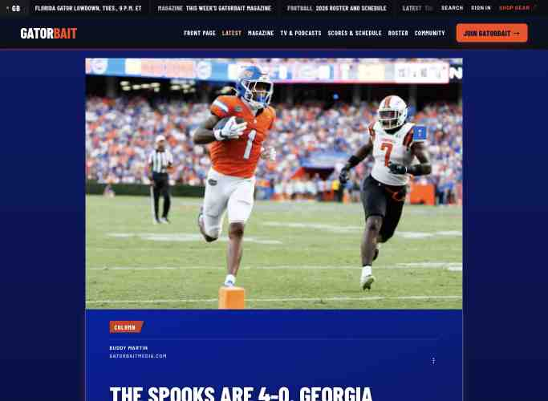

VERIFIED ARTICLE REPAIR · HOMEPAGE FOLLOW-UP OPEN
The complete player is visible in Buddy’s article.
One guarded update to the existing article presentation embed restored the current writer-supplied photograph’s full frame. Native story copy, writer, media, publication identity and dates were preserved.

| Surface | Observed outcome |
|---|---|
| Buddy article, 390/430/1366 | PASS: current photograph visible once, full helmet and legs, actual Buddy Martin byline and credit,39 saved text blocks and full ending, no overflow. |
| Franz article, 390/430/1366 | PASS: actual Franz Beard byline, archive credit,49 saved blocks and full ending, retained fact corrections and writer sentence, no overflow. |
| Homepage, 390/430/1366 | PARTIAL: nine loaded distinct photographs and nine bylines. A stronger existing Gazette rule still overrides the same-photo containment rule. No second patch was made. |
| Public cache | One ordinary mobile request returned the previous cover/caption. One fresh public confirmation showed the current native revision; retain an ordinary canonical cache recheck. |
| Distribution | No publication, email or push replay. Franz’s existing Facebook promotion was independently found public with the exact canonical CTA and archive credit; do not duplicate it. |
| Muse | Exact packet posted once through the owner-designated GitHub transport. Acceptance and remaining native channel claims are unverified; the local Mac was locked. |
Existing homepage work item remains open
The new same-photo selector matches the real image source but loses to the Gazette selector’s greater specificity. The prepared 14999-character candidate is not applied. The next existing scheduled pass must fresh-read native revision and public rules before one guarded correction. Do not restart a cycle to reset the one-mutation budget.
Release evidence
- Existing embed
a5452619-cb57-4927-9771-3a63f7cb4212: revision 11 →12,14992characters, fingerprint14b07355 →2b46ce16. Settings and native article identities/media/dates independently read back unchanged. - Exact deployed revision 12 source · Exact revision 11 rollback source. These files are dated records, not an automatic deployment path.
- Existing production claim · Exact Muse packet and reconciliation request.
- Source original, attachment, accepted full-copy hashes and private intake/provider receipts remain in the existing private ledger/output, outside this repository.
- Spaces app appearance, device notification receipt, email delivery, Muse acceptance and missing numeric social IDs remain unverified.
Next check
Inspect full photographic subjects and the current image-key selectors after every native cover change. Read winning computed CSS for each actual surface. A viewport/overflow probe or native media flag cannot prove that a player’s face, ball or feet remain visible.
Observed Oct. 29, 2026, 19:01–19:12 UTC. No scheduler, account, audience or billing changes.